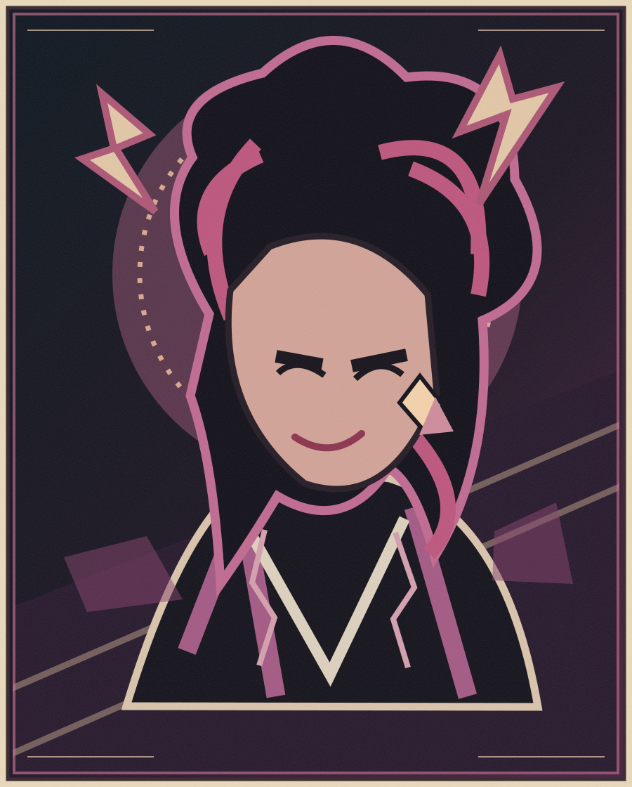
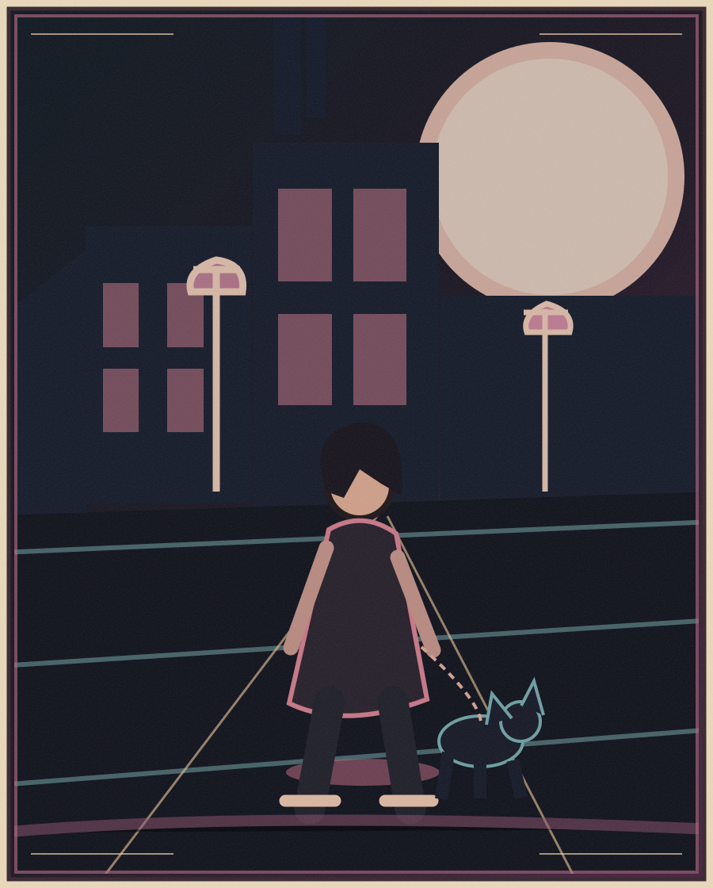
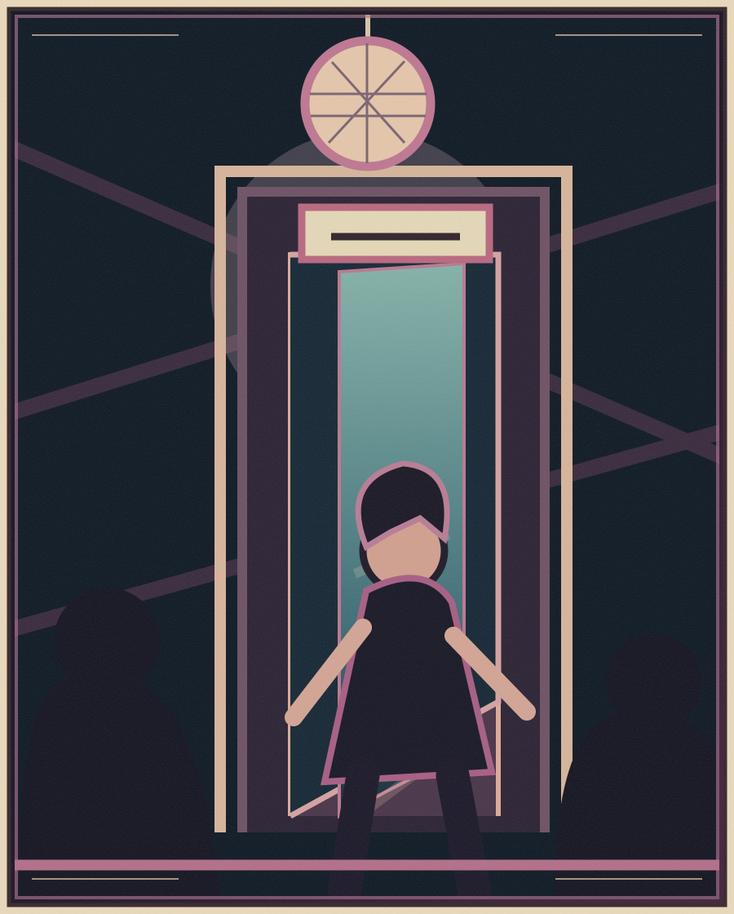
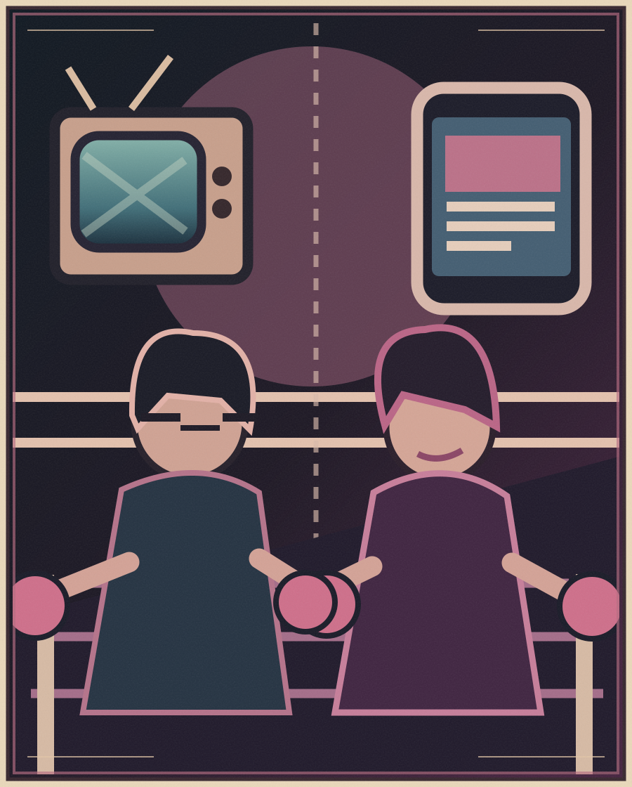

STYLE / CULTURE · NO. 02
The Rise and Fall… and Rise of the Mullet

An old silhouette, glam-rock fame, and a second act shaped by more than one scene.
READ THE FEATURE ↗An independent newspaper of the South Florida coast
THEVICE CITYSINNERA South Florida publication for the curious, the restless, and the unconventional
Homelessness, mental health, and what happens when every door has a different rule.
A person is sleeping outside with a dog. Someone is talking to themselves at a bus stop. A shopping cart is parked beside a tent. We see a few seconds of a life and start assigning causes: mental illness, addiction, bad choices. Sometimes illness or addiction is part of the story. Sometimes it is not. The sidewalk can show that a person has nowhere safe to sleep. It cannot tell us why, diagnose them, or show how many times they have already tried to get help.
READ THE COMPLETE EDITORIAL ↗

An old silhouette, glam-rock fame, and a second act shaped by more than one scene.
READ THE FEATURE ↗
Why do we treat black clothes as a problem with an expiration date?
READ THE FEATURE ↗
A good night out is not an endurance test, and going home does not revoke your scene membership.
CONTINUED INSIDE ↗
The analog survivor and the internet kid enter the ring. Nobody wins. Everyone argues about the music.
CONTINUED INSIDE ↗Miami Beach once used an elephant as a golf tee. This is a real archival photograph, not a local legend. Two more genuinely unusual October stories await inside.